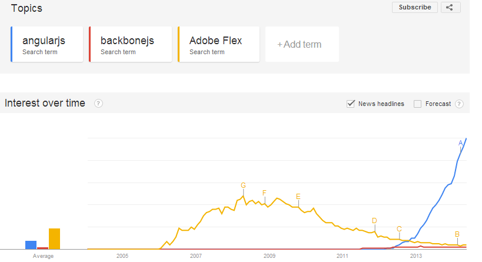

Introducción a NodeJS, AngularJS y BackboneJS
Creado por @rrequero
Indice
- ¿Que vamos ha hacer?
- ¿Que necesitamos?
- Características de las tecnologías
- Demo
- NodeJS
- Angularjs
- Backbone.js
¿Que vamos ha hacer?
- Aplicación web de gestión de usuarios (CRUD)
- Backend con NodeJS y MongoDB
- Frontal con AngularJS
- Frontal con BackboneJS
¿Que necesitamos?
- NodeJs: http://nodejs.org/
- MongoDB: https://www.mongodb.org/downloads
- AngularJS y BackboneJS
- GIT http://git-scm.com/
- Editor de texto: Notepad++, Sublime Text, Eclipse, IntelliJ, ...
NodeJS

- Programa de servidor
- Motor V8 JavaScript escrito por Google
- Programación orientada a eventos
- Facilmente escalable
- NPM
- OpenSource
Express
- Framework de desarrollo de aplicaciones web
- Router
- Session handler
- Gestor de plantillas (Jade, EJS, etc)
- Etc...
- OpenSource
MongoDB

- NoSQL
- Orientado a documentos
- Estructuras de datos en BSON
- OpenSource
Mongoose
https://github.com/learnboost/mongoose/
- ODM
- OpenSource
Angularjs

- Creado por Google
- MVC
- Data binding
- Inyección de dependencias
- Documentación
- No tiene dependencias
- OpenSource
Backbone.js

- Creado por Jeremy Ashkenas (creador de CoffeScript)
- MVC
- Dependencias:JQuery, underscore
- OpenSource
Actualmente
Comparación de crecimiento

Actualmente
Comparación de uso
Demo
Angularjs: demo
Backbone: demo
Preparación
- Arrancar mongodb
- Descargar código de la demo en github
- Ejecutar script de creación de inicialización de la bbdd
MongoDb
Código del backend de la aplicación de demo
Conexión a mongodb
mongoose.connect('mongodb://127.0.0.1:27017/crudUsers', onDbReady);
Modelo de User
/**
Definimos el modelo
**/
var Schema = mongoose.Schema;
var User = new Schema({
username: { type: String, required: true, index : { unique : true}, trim: true },
email: { type: String, required: true, trim: true },
password: { type: String, required: true },
name: { type: String, required: true, trim: true },
surname: { type: String, required: false, trim: true },
createdAt: { type: Date, default: Date.now },
gravatar: {type: String, required:false}
});
mongoose.model('User', User);
Router de express
var router = express.Router();
Router de express
List de usuarios (GET)
router.get('/users', function(req, res) {
mongoose.model('User').find({},
function (err, list) {
if(err){
console.log("Error "+err);
}else{
res.json(list);
}
});
});
Router de express
Obtención de usuario por username (GET)
router.get('/users/:username', function(req, res) {
mongoose.model('User').findOne({username:req.params.username},
function (err, list) {
if(err){
console.log("Error "+err);
}else{
res.json(list);
}
});
});
Router de express
Creación de usuario (POST)
router.post('/users', function(req, res) {
//comprobamos si existe un usuario con el mismo username
mongoose.model('User').findOne({username:req.body.username}, function(err, user){
if(err){
res.status(510);
res.send("Error delete user");
}else{
if(user){
res.status(510);
res.send("Duplicated user");
}else{
//creamos el usuariovar userModel = mongoose.model('User');
var userModel = mongoose.model('User');
var user = {
name:req.body.name,
username: req.body.username,
email: req.body.email,
password: req.body.password,
surname: req.body.surname,
gravatar:req.body.gravatar
};
var userInstance = new userModel(user);
userInstance.save(function (err, user){
if(err){
res.status(510);
res.send("Error create user " + err);
}else{
res.json(user);
}
});
}
}
});
});
Router de express
Actualización de usuario por id (PUT)
router.put('/users/:id', function(req, res) {
//comprobamos si existe un usuario con el mismo username
mongoose.model('User').findOne({_id:ObjectId(req.params.id) }, function(err, user){
if(err){
res.status(510);
res.send("Error delete user");
}else{
if(!user){
res.status(510);
res.send("User not exist");
}else{
user.name=req.body.name;
user.email= req.body.email;
user.password= req.body.password;
user.surname= req.body.surname;
user.gravatar=req.body.gravatar;
//var userInstance = new userModel(user);
user.save(function (err, user){
if(err){
res.status(510);
res.send("Error update user " + err);
}else{
res.send("");
}
});
}
}
});
});
Router de express
Borrado de usuario por id (DELETE)
router.delete('/users/:id', function(req, res) {
mongoose.model('User').remove({_id:ObjectId(req.params.id)},function(err){
if(err){
res.status(510);
res.send("Error delete user");
}else{
res.send("");
}
});
});
Levantar el servidor
var server = app.listen(app.get('port'), function() {
console.log('Express server listening on port ' + server.address().port);
});
AngularJS
Conceptos básicos
- Scopes
- Modules
- Controllers
- Filters
- Directive
- Services
AngularJS
Scopes
Los scopes son los distintos contextos de ejecución
Guardan la información
AngularJS
Modules
Namespace: Organizan el código
Declaración de dependencias
AngularJS
Controllers
Son los elementos principales de angularJS
Manejan toda la información del scope
AngularJS
Filters
Modificadores
AngularJS
Directives
Atributos, Elementos, Comentarios o Clases CSS
Asocia una funcionalidad a la directiva
Demo
AngularJS
Services
Tres grupos: Services, Factories y Providers
Organización y reutilización de código
AngularJS
CRUD de usuarios
Backbone
Conceptos básicos
- Events
- Models
- Collections
- Route
Backbone
Events
Acontecimientos internos que ocurren en la aplicación
Se pueden recoger en cualquier parte de la aplicación
Ejemplo: Se modifico un modelo, se elimino un modelo de la colección,etc
Backbone
Models
Son contenedores de datos
Tienen metodos para tratar los datos (CRUD)
Lanza eventos cada vez que ocurre algo en el modelo (
Backbone
Collections
Conjunto de modelos
Tienen metodos para tratar los datos (CRUD), ordenar y buscar
Generan eventos cada vez que se agrega o elimina un modelo y tambien genera los eventos de los modelos
Backbone
Views
Controladores
Orquestan todo lo que pasa en una "pantalla"
Manejan el diseño de la interfaz HTML (renderizado normalmente con underscore)
Backbone
Route
Encargados de redirigir a cada una de las vistas